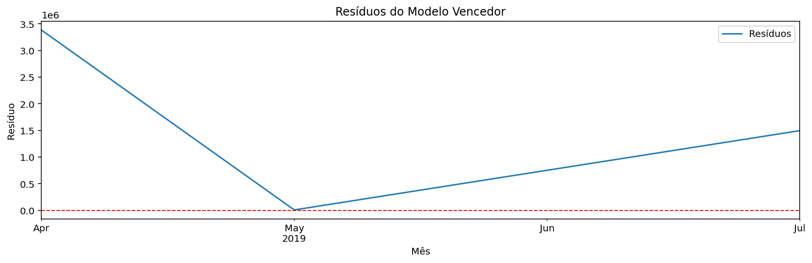

Relatório de Série Temporal - Vendas Mensal Receita
Dataset: Updated_sales.csv • Variável: Receita (R$) • Frequência: Mensal • Horizonte: 3 meses
Resumo dos Dados
count: 6
mean: R$ 1.315.557,71
std: R$ 1.335.663,25
min: R$ 2.096,74
25%: R$ 196.538,98
50%: R$ 1.126.437,43
75%: R$ 2.056.335,88
max: R$ 3.385.499,82
n pontos mensais: 6
Período coberto: 2019-04 a 2019-09
Missing antes: 2 | depois: 0
Métricas no Conjunto de Teste
| Métrica | Valor |
|---|
| MAE | R$ 1.120.109,41 |
| RMSE | R$ 1.584.073,93 |
| MAPE (%) | 49,95% |
Descrição do Modelo
Modelo ingênuo: a previsão mensal repete o último valor de receita observado. Esta previsão é meramente ilustrativa, pois a série mensal de `Updated_sales.csv` é curta e irregular; para decisões de negócio, use preferencialmente a análise semanal. Observação: previsão ajustada para usar a média dos últimos meses, pois o modelo original produziu valores muito próximos de zero.
Análise de Resíduos
Ljung-Box p=0,7162; Jarque-Bera p=0,8111; Breusch-Pagan p=nan

Série Original

Previsão para os Próximos 3 Meses — dataset: Updated_sales.csv

Valores Previstos
| Mês | Previsão |
|---|
| 2019-09 | R$ 1.247.603,04 |
| 2019-10 | R$ 1.247.603,04 |
| 2019-11 | R$ 1.247.603,04 |
Treino vs Teste (Previsão no Teste)